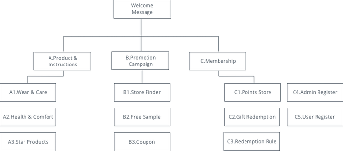
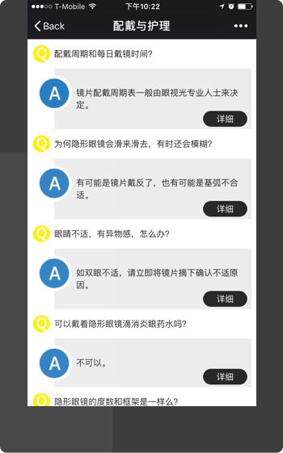
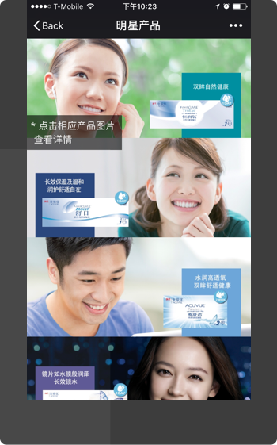
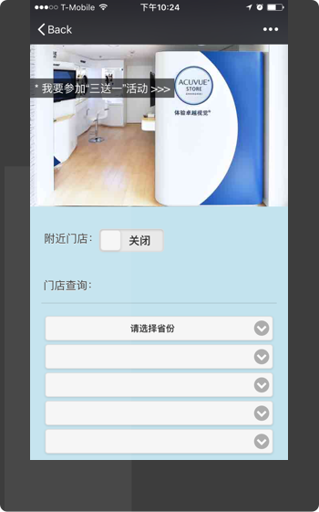
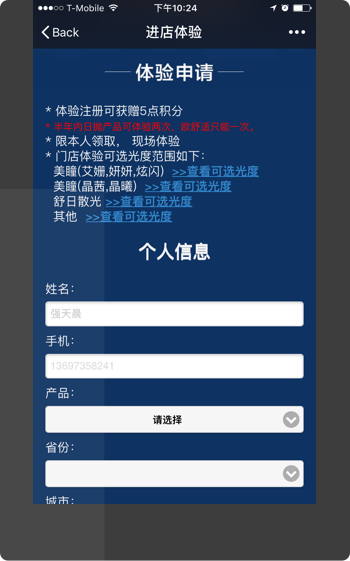
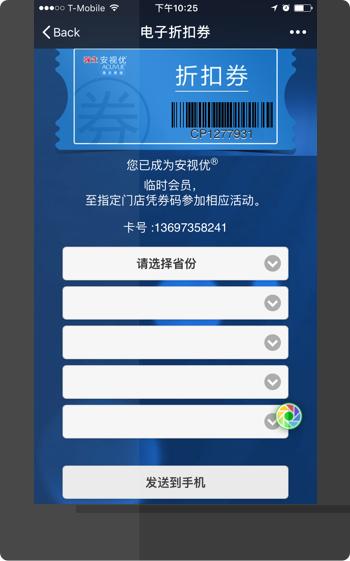
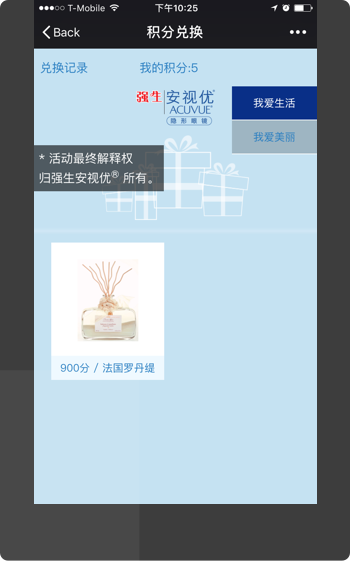
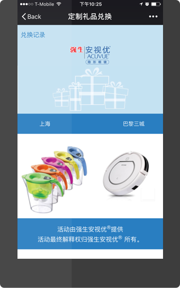
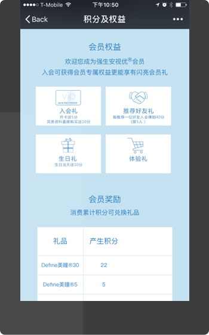
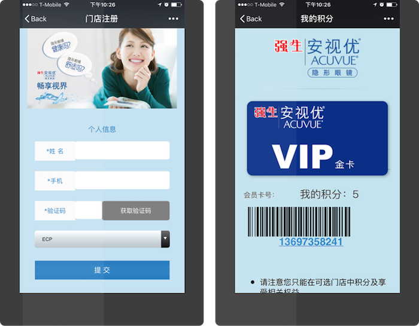

Problem
Defining existed problems took me forever
Since there were so many problems for the APP, after I went through all pages, I
summarized its information architecture to help me better comb its logic.

Then, for each part of the APP, I tried to define its problems based on my knowledge about user
experience
design. If I had some questions, I would reach out for help from my director but I finished almost all
of them. Here we went:

For the Instruction page, I thought instructions should be question-centered instead of answer-centered.
And after I clicked one answer, the detail page would open up in a new web page, which forced me have to
go back every time, but I preferred a smooth one-page reading experience.

For the Product page, the big images caused slow loading speed. Also, the huge annotation of “Clicking
image to see details" wasn’t necessary since the card section should self-explain that it's clickable.
Also, the top menu bar wasn’t conspicuous to be found by users.

For the Store finder page, the advertisement image not only didn’t increase user experience, but also
hampered it, because it took up the hero area which made the core function, store location, hard to be
found by users. Besides, when users searched a shop location, the useful map view feature was hidden in
default. Instead, a text-based address showed up, which totally disrupted the order.

For the Free sample page, there were too many form fields to fill, which was crazy. And there was a minor
technical bug that when you went into the page, the scroll bar always jumped down some distance, which
distracted users’ browsing experience.

For the Coupon page, the heavy image introduction should be replaced with html and css, which could save
network resource. Also, similar to free-sample page, users directly jumped down to the form area,
completely skipping the coupon instruction area, which meant many users had to scroll back if they
wanted to see instruction.

For the Points store page, there was no clue telling users how many points they already had. Also, if an
unlogged user clicked a product to check details, there would be alert popping up telling the user to
log in firstly. It would be better to directly jump to log in page when the website detected the
unlogged status.

For the Gift redemption page, the redemption history button was only a text one, which didn’t look
clickable. Also, the redemption process was redundant that asked users to do many unnecessary steps. Why
wouldn’t it be more convenient for users? For example, a one-click redemption.

For the Redemption rule page, the title of “member card number” was meaningless for unauthenticated users
but the title was always there. Also, the redemption rules should be simplified. Now it’s hard to for a
ordinary person to figure them out.

For the Admin registration page, the page should not be here which could be viewed by users. It’s not a
function for customers. And for the User registration page, firstly the registration form was also
redundant. Secondly, the page title should be replaced with my account because the title of “user
registration” wouldn’t make sense any more after users finished registration.